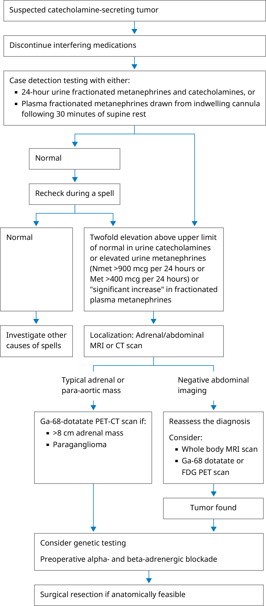

Evaluation and treatment of catecholamine-producing tumors

Ga-68 dotatate: gallium 68 1,4,7,10-tetraazacyclododecane-1,4,7,10-tetraacetic acid-octreotate; CT: computed tomography; FDG: fluorodeoxyglucose; Met: metanephrine; MRI: magnetic resonance imaging; Nmet: normetanephrine; PET: positron emission tomography.
Modified and reprinted with permission from: Young WF Jr. Pheochromocytoma: 1926-1993. In: Trends in Endocrinology and Metabolism, vol 4, Elsevier Science, Inc 1993. p.122.
Graphic 81154 Version 10.0